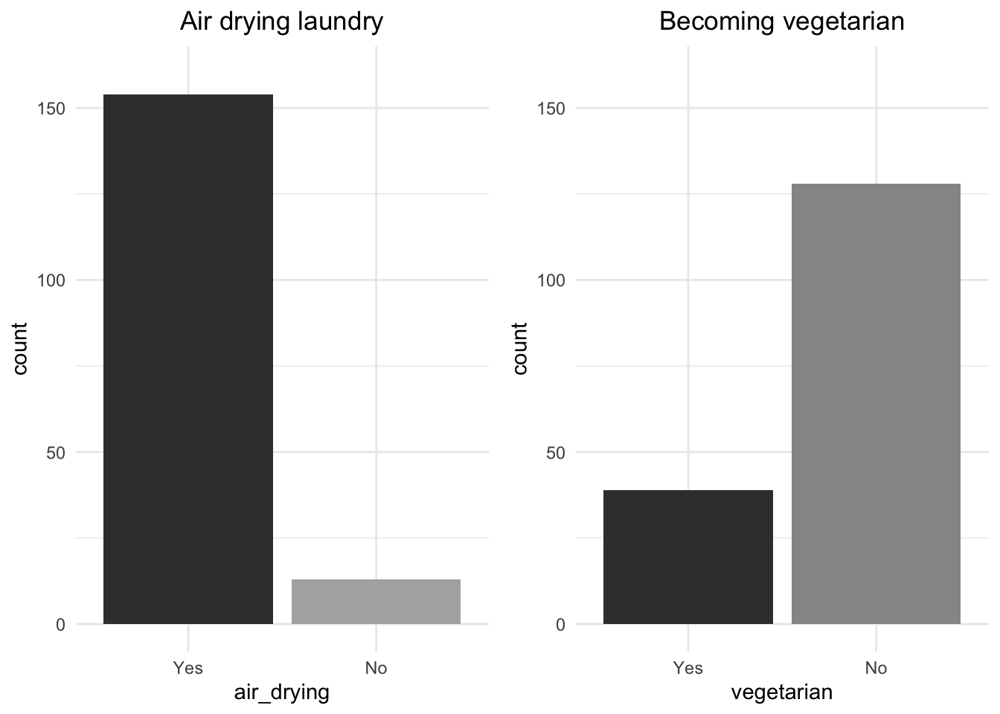

Session 1: Presentation of the Atomic Habits case study
Objectives of this session
- Understanding the data set of perception
- Analysis and visualization of data
- Yes/No answer data
- Score data
Exercises
The Atomic Habits case study
‘Atomic Habits’ refers to a book written by James Clear, published in 2018. The full title of the book is Atomic Habits: An Easy & Proven Way to Build Good Habits & Break Bad Ones. The book focuses on the idea that making small, incremental changes to our habits can lead to significant improvements in our lives over time.
The term ‘atomic’ in this context refers to the concept of breaking habits down into their smallest, indivisible components. Just as atoms are the fundamental building blocks of matter, small habits are the fundamental building blocks of personal development and behavior change. The book draws from scientific research, psychology, and real-life examples to explain how habits work and how individuals can harness the power of habits to transform their lives.
In our study, participants were given a list of ten habits to implement in their daily lives. By understanding the difficulties and constraints of implementation, how habits are perceived and why they are perceived as they are, we can suggest ways to change behaviour.
The questionnaire regarding the perception of the ten habits was composed of three sections.
The first section of the questionnaire was about the possibility of implementing the habit. If the participant thought the habit could be done in the near future, or if they had already started doing it, they would answer ‘Yes’. If they did not think it was possible to do the habit in the near future, they would answer ‘No’.
In the second section of the questionnaire, participants were asked to indicate the degree of constraint they would experience in performing the habit. This was answered on a scale from 0 to 5.
The third section asked for the reasons for their answers and would give us a more thorough explanation of their answers, giving us more insight into the perceived difficulty of these habits.
In this session we will look at the analysis and visualisation of the first and second sections of the questionnaire. We will try to deepen our understanding of the implementation and limitation of the ten habits.
Data analysis and visualisation
Do you feel capable of…?
Some numerical indicators
As mentioned, ten atomic habits were evaluated:
- never drive alone (car_alone)
- never take the plane (never_airplane)
- use equipment loan systems rather than buying (loaner)
- buy only second hand clothes (clothes_second)
- buy only bulk products (bulk)
- buy only local products (local_products)
- switch off plugged-in appliances instead of leaving them on standby (unplug)
- lower the temperature in your home by 1 degree (low_temperature)
- adopt a strictly plant-based diet (vegetarian)
- air-dry your washing (air_drying)
The first question was: do you feel capable of…?. The first part of the data consists of yes or no answers. In other words, it is binary data. What can we do with this data? Firstly, we can understand the difficulty of implementation by looking at the frequency of yes or no answers.
## car_alone never_airplane loaner clothes_second bulk local_products
## Yes:79 Yes:81 Yes:151 Yes:95 Yes:118 Yes:89
## No :88 No :86 No : 16 No :72 No : 49 No :78
## unplug low_temperature vegetarian air_drying
## Yes:144 Yes:145 Yes: 39 Yes:154
## No : 23 No : 22 No :128 No : 13Looking at these results, we can see that the proportions of yes and no answers are different from one habit to the other. If the proportion of ‘no’ answers is higher, more people find this habit more difficult to implement. Therefore, if we organise the order of these habits according to the proportion of ‘no’ answers, we can see which habits are harder to implement than others.
## Yes No
## vegetarian 39 128
## car_alone 79 88
## never_airplane 81 86
## local_products 89 78
## clothes_second 95 72
## bulk 118 49
## unplug 144 23
## low_temperature 145 22
## loaner 151 16
## air_drying 154 13If we rearrange the habits according to the frequency of responses, we can see that becoming a vegetarian and never using a car when alone are the hardest habits to implement. We can also see that air-drying laundry and using a loan system for items are easier to implement.
Some graphical representations
R comes with a number of functions that you can use by default, but
you can use a wider range of functions by using packages. R packages are
collections of R functions, code, and data that are easy to install and
use. When you first open R, the R console has only the default packages.
But by installing and loading other packages using respectively the
install.packages() and library() functions, we
have access to more functions. Let’s represent our data with the
ggplot2 package.
The data we have compiled is the frequency of responses for each habit. This type of data can be visualised using bar charts. Bar chart and bar plot are terms often used interchangeably, and they both refer to graphical representations of categorical data using rectangular bars. Let’s start by visualising the habit that was considered the easiest to implement.
Through this bar plot we can see that the frequency of the answer ‘Yes’ is much higher than ‘No’, meaning that the habit of air drying your laundry is found implementable for a lot of people. Now let’s look at the habit that was considered most difficult to implement.

Unlike the previous habit, the habit of becoming vegetarian had a higher frequency of the answer ‘No’. This shows that the implementation of this habit is difficult to implement.
In order to effectively compare the proportions of these two habits, we can standardize the y axis and put these graphs side by side.

From this comparison we can see that the difference in proportions is more extreme for the habit of air-drying than for becoming vegetarian.
Remarks
- If you want additional information about what categorical variables are, please visit this website.
- Habits could be easily replaced by some other stimuli such as products in sensory science.
I find this habit…
Some numerical indicators
The second part of the data concerns the restrictiveness score for the ten habits: I find this habit: 0, not restrictive - 5, very restrictive. With this data we can understand the quantitative level of constraint perceived by the participants for the ten habits. A rudimentary analysis can be done by calculating the mean of the scores for each habit. Let’s look at this first.
## car_alone_score never_airplane_score loaner_score
## 3.1 2.7 1.7
## clothes_second_score bulk_score local_products_score
## 2.3 2.4 2.7
## unplug_score low_temperature_score vegetarian_score
## 1.6 1.5 3.6
## air_drying_score
## 1.1Looking at the mean values of the scores, we can see that the habits have different mean values, which shows that the amount of constraint the participants perceive the habit to be is different. Just as with the previous binary data, we can rearrange the results to understand them better.
## vegetarian_score car_alone_score never_airplane_score
## 3.6 3.1 2.7
## local_products_score bulk_score clothes_second_score
## 2.7 2.4 2.3
## loaner_score unplug_score low_temperature_score
## 1.7 1.6 1.5
## air_drying_score
## 1.1By rearranging habits by mean values we can see which habits are more constraining than others. We can also see that out of the habits, becoming vegetarian is the most constraining, while air drying is the least constraining.
Some graphical representations
The mean of the scores gives a good summary of the level of restriction, but it does not fully explain the data we have. Even if two habits have similar mean scores, this does not mean that the distribution of perceptions is the same. Some habits may have a fairly even distribution of scores, while some others may have a skewed distribution. The distribution of scores is visualised using a histogram. A histogram is a graphical representation of the distribution of a dataset. It is used to display the underlying frequency distribution of a set of continuous or discrete data.

Now that we can see the distributions of the scores, we can have a deeper understanding of the scores. For example, the habit of using only local products (local_products_score) and never taking a plane (never_airplane_score) have the same mean of 2.7, but they have a different distribution.
For the habit of using local products, the score responses were more heavily distributed between 2 and 4, indicating that the majority of participants perceived this habit to be similarly constraining. However, for the habit of never flying, the distribution was more even, suggesting that for some participants this habit was not perceived as constraining at all, while for others it was very constraining.
In this session we have analysed categorical and continuous data and also presented this analysis in a more effective way by visualising the data. In the next session we will look more closely at the score data to deepen our understanding.
Vocabulary of this session
R commands
- library
- geom_bar
- geom_histogram
R environment
- packages
Statistical terms
- Counting frequencies
- Calculating the mean value